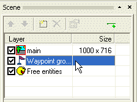
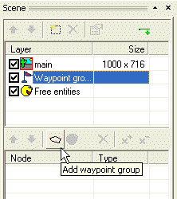
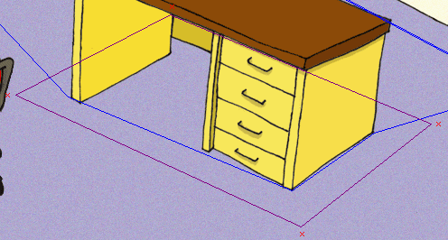
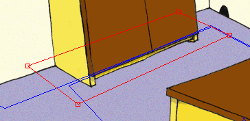
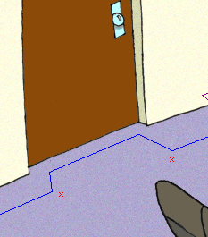
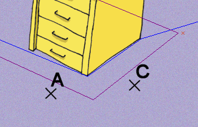
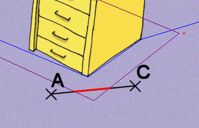
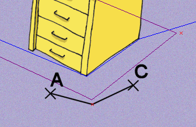

Waypoints help your actors to navigate the scene. The actors are able to walk from one waypoint to another as long as there is no blocked region in their way. If there are multiple waypoints in the scene and you tell the actor to walk somewhere, he will use the waypoints to find the shortest path from his current position to the requested destination.
In our scene, the actor is not able to go around the desk. We will teach him how.
Open our “MyScene.scene” file in SceneEdit. In the layer list window click the “Waypoint groups” item (the waypoints are grouped to one or more groups, hence the name “waypoint groups”).

The contents of the node list window have changed. Now it shows the waypoint groups. Click the “Add waypoint group” button.

A “new waypoints” item has been created. Change its name for example to “wpt_default”. You can now add new waypoint to the group or remove existing points. It’s done exactly the same as adding/removing vertices to/from the regions, i.e. using the “Add point” and “Remove point” buttons.
We will add four waypoints; one to each vertex of the blocked region:

Remember, the actor is only able to find a way from one waypoint to another if a direct non-blocked connecting line exists between those waypoints.
Those four waypoints will allow our actor to walk around the desk with no problems. Try it. Save the scene, switch to the ProjectMan tool and run the game. Select the “MyScene” item as usual and test the scene. If you click the floor somewhere behind the desk, the actor will walk there, walking round the desk intelligently.
Quit the game (press the Esc key twice) and switch back to SceneEdit. We will work on our scene a bit more.
We don’t want our actor to walk into the closet. So we will block the closed area by adding another blocked region.
Select the “main” node in the layer list. Then click the “Add region” button. Change region’s name to “block_closet” and change the radio button from “Layout” to “Blocked”. Now change the shape of the region to block the closet:

Three vertices of the region lie outside a “walkable” area, but the bottom left vertex lies inside. We must add a waypoint to allow the actor to walk around this vertex.
Click the “Waypoint groups” item in the layers list and then select our “wpt_default” group in the node list. Click the “Add point” button and place a new waypoint near the closet’s blocked region’s vertex (see the picture below).
The actors will now utilize this waypoint to walk around the closet’s edge.
You can find two more “edges” (acute angles) in the scene the actors may have trouble walking around. These are near the door. Let’s add two more waypoints:

I will add one more example to help you understand how waypoints work. Imagine the following situation. The actor is standing somewhere in the scene (the “A” point) and the player click the floor (the “C” point):

There isn’t a direct path from point A to point C, because the blocked region is in the way. If there wasn’t the waypoint the actor wouldn’t be able to find a way to the C point:

But after adding the waypoint, the actor walks to it first, and then he can walk directly to the C point:

OK, that’s all about waypoints. Save your scene and quit the SceneEdit. If you test the scene, you’ll see that the actor doesn’t have a problem getting anywhere in the scene. He should be always able to find a shortest path.
Yet he still walks through the chair and his scale is far from perfect. Let’s move on to a Step 6: Free entities, scale levels and decoration regions.